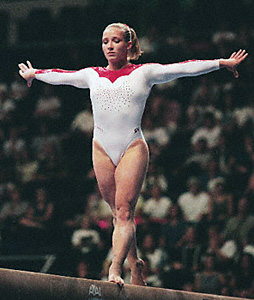

Kim Zmeskal (USA)
1991 World AA Champion
1992 World B and FX Champion

Medal Total
Olympic Games: 1
Bronze
World Championships: 3 Gold, 1 Silver, 1 Bronze
Kim was born on February 6, 1976 in Houston, TX and trained with Bela and Marta Karolyi. She jumped to prominence in 1989 when she won the US junior title. The following year she won the senior title (she won in 1991 and 1992, also) and gained a spot on the US team at the Goodwill Games. In 1991, Kim became the first US gymnast to win an all-around gold medal at a world championships. She won two individual gold medals at the 1992 World Championships (an events-only competition) and was a favorite to win overall gold at the Barcelona Olympics. A fall from compulsory beam took Zmeskal out of the running; she finished 10th all-around.
After Barcelona, Zmeskal finished high school and coached a bit. She returned to Karolyi in 1995 in hopes of making the 1996 Olympic team. Unfortunately, she tore her ACL during an exhibition floor routine and went to Atlanta as a spectator. She moved to Cincinnati Gymnastics Academy in 1997, and in early 1998 she returned to competitive gymnastics at the American Classic (a qualifying competition for the national championships) where she competed on 3 events. Six months later, she finished 3rd at the US Classic. A few weeks later, she finished 11th at the US Championships and was once again named a member of the national team. Injuries throughout most of 1999 kept Kim out of the gym, and in early 2000 she retired from the sport.
She married fellow gymnast/coach Chris Burdette in October 1999. They coach at Texas Dreams Gymnastics in Coppell, TX. The couple have two sons and are expecting a third child.
Competition Results
1988
Jr. American Classic: 8th AA
Jr. US Championships: 8th AA
Jr. US Classic "A": 17th AA
1989
American Classic: 1st AA
City of Popes International: 1st AA
DTB Cup: 4th AA, 2nd B, 3rd V
French International: 9th AA
Gander Memorial: 1st AA
US Olympic Festival (Jr. US Championships): 1st AA, 1st FX, 2nd V, 2nd B
1990
American Cup: 1st AA
Blume Memorial: 6th AA
DTB Cup: 5th AA, 4th B, 5th FX
French International: 2nd AA, 1st FX
Gander Memorial: 3rd AA
Goodwill Games: 2nd Team, 6th AA, 3rd UB, 3rd FX, 4th B
Intl. Mixed Pairs: 1st Team
Jr. Peachtree Classic: 1st AA
US Challenge: 1st AA
US Championships: 1st AA, 2nd UB, 2nd B, 2nd FX, 5th V
USA-USSR Dual Meet: 2nd Team, 1st AA
1991
Alamo Invitational: 1st AA
American Cup: 2nd AA
Buckeye Classic: 4th AA
Intl. Mixed Pairs: 1st Team
US Championships: 1st AA, 1st FX, 2nd B
USA-ROM Dual Meet: 1st AA
World Championships: 2nd Team, 1st AA, 3rd FX, 7th V
1992
Alamo Invitational: 1st AA
American Cup: 1st AA
Intl. Mixed Pairs: 4th Team
US Championships: 1st AA, 1st B, 1st FX, 2nd V, 2nd UB
US Olympic Trials: 2nd AA
Olympic Games: 3rd Team, 10th AA, 6th FX, 8th V
World Championships: 1st B, 1st FX
1993
Subaru World Open: 1st AA
1998
American Classic: 35th AA
Reese's International: 2nd AA
US Championships: 11th AA
US Classic: 3rd AA
Women's Professional Gymnastics Championships: 3rd AA
1999
USA-CHN Dual Meet: 1st Team, 1st B
This page was created on January
3, 2004 and was last updated on August 1, 2009.
© Gymn Forum